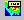

Icons/Context menu items and Descriptions
This page contains all tool bar icons and its simple descriptions.
Toolbar Icons
Icon Icon title Description Product Explorer This contains Scene Tree, Part List, Viewpoint List and Label List panels. Fit View Fits the model into user view. Display Mode Changes its display mode for each click. Possible display modes are Shaded, Shaded Mesh, Wire frame, Hidden Line, Transparent and Points respectively. Explode Explodes all parts. Section Allows user to define a section plane to clip or cut the model. Measure Distance Allows user to measure 3D Distance between any two points on model. CAE Results Lists all results and user selected result would be applied on model. CAE Settings Pops up CAE Settings dialog, which has tabs for Legend Settings, Edit Legend, Hotspot Finder, Vector Plot and XYPlot.  Probe Enables to probe CAE results Hotspot Finder Enables CAE hotspots finder mode. Animate Pops up Animate dialog. Add Notes Pops up Add Notes dialog for user annotation. Move Label Enables mouse mode to move label Zoom Region Allows user to zoom in a specific area.


Viewer Context Menu
Context Menu Item Description
Reset Resets to default front view. Fit view Brings all parts of model into view port Show/Hide Shows/hides parts. Open file Allows user to load CAx file Product Explorer Contains scene tree, view points panel, Label List and Part List Explode Explodes all parts. Background Allows user to change background Edit Mouse Allows user to customize mouse operations Section Allows user to view cut section of model CAE Allows user to deal with CAE data. Pick Allows user to pick and drop a part. Measure Allows user to measure distance and arc/circle View Point Allows user to add viewpoint states. Display Mode Displays different display modes. Display options for Axis, Full Screen, Properties and Line set size. Move Model As Helps in increasing performance in user interaction. Label Allows user to modify label visibility. Refresh Normals Allows user to apply recomputed Normals to the model. Navigator Passive Transformation mode More Expands more options.